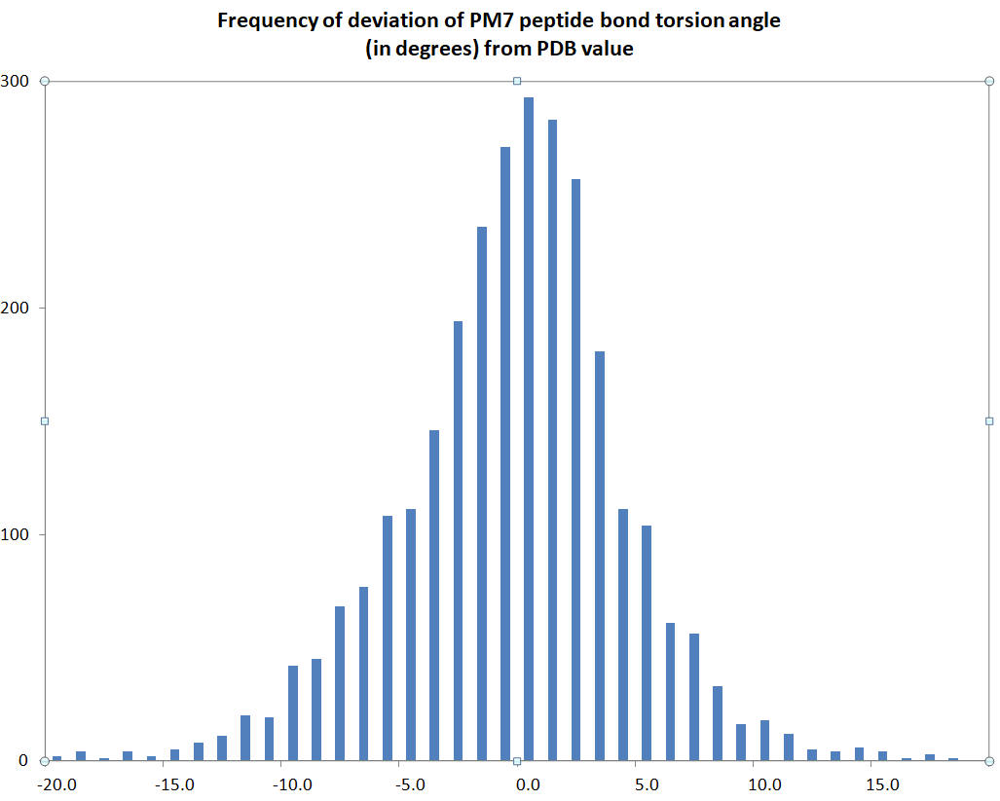

The Ramachandra angles φ, ψ, and ω for residues in a protein are printed. In the output the names of these angles are "Phi", "Psi", and "Omega"
An estimate of the accuracy of prediction of the peptide twist angle ω can be obtained by comparing the calculated PM7 twist angles with those found in PDB structures. A set of 2833 peptide bonds found in ten proteins deposited in the PDB in March 2021 was used in making this comparison. The histogram of the difference between the calculated and observed torsion angles is shown in the chart. To see the raw data, download Ramachandran. As expected, the calculated torsion angles are more often less than that observed, as can be seen at -10 and 10 degrees difference.
